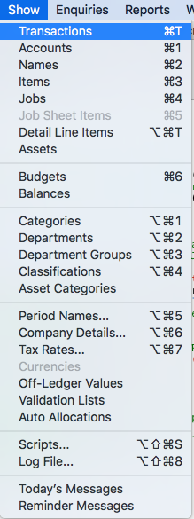
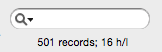

MoneyWorks Manual
Working with Lists
MoneyWorks presents information as lists. These lists are “live” and can be easily sorted, searched, printed or customised, providing quick access to your data.

List on a Mac

The wonderful thing about lists is they all work alike; once you can use one list, you can use them all—adding a new product is done in exactly the same way as adding a new transaction, account code or client. So it is well worth spending a few minutes to read this chapter.
A list is a representation of a source “file” such as items (as shown above for both Windows and Mac) or transactions. Lists are accessed from the Show menu (right), or you can use the keyboard shortcut (as shown in the Show menu) to open a list with a single keystroke.
Each row in the list represents a record in the file—for example, a transaction if you are looking at the transactions list, or a product if you are looking at the product list. You can customise each list so that it contains the information in a form that best meets your individual needs —see Customising Your List. Customisation features include changing the position of columns, resizing columns, and also adding and removing columns.
At the top of most list windows is a toolbar. This provides easy visual access to the main operations that can be performed on the list, or on records within the list. For example, to add a new item to the list, simply click the New toolbar button; to duplicate a record, click once on the record in the list so that it highlights and then click the Duplicate button.
Resizing the List: The list can be resized by dragging any of the edges or the bottom right-hand corner. Or you can use the standard zoom and maximise controls in the list window title bar (at the top left of the window on the Mac, and the top right on Windows). On Windows you can press F12 to zoom the window.
Moving Through the List: Use the vertical scroll bar to scroll up or down the list. Use the Page Up and Page Down keys to scroll the list up and down a page at a time. The Home key scrolls to the top of the list and the End key takes you to the bottom of the list.
Closing the List: Click the Close Box in the window’s title bar to close the window, or choose File>Close Window, or simply press Ctrl-W/⌘-W.
Viewing a Record: To view or modify a record in the list, highlight the record by clicking on it and press the enter key, or simply double-click the record. A window will open showing the information in the record.
Sidebar Views
Most lists have a sidebar on the left hand side that allows you to view a predefined subset of the data displayed1, or print a report based on the records shown or highlighted in the list. For example, in the Names list, clicking on the Customers sidebar view will display just your customers.

Each view is named, and to see the records associated with a view, simply click on the name in the sidebar. The left and right arrows keys can also be used to move from view to view2.
Some views (such as those in the Names list) are hierarchical. Clicking on Customers for example will show all customers, whereas clicking on Debtors will just show those customers to whom you extend credit. Hierarchical views have a small disclosure control next to them—click on this to expand or collapse the views shown in the sidebar.
Note: When you search a list, only the records in the current view are searched.
Useful reports that are based on the records shown (or, in some cases, highlighted) in the list are available under the Report on Selection tab in the sidebar. Simply click on the report name to start printing/previewing the report.3
The Status Indicator

The status indicator is located at the top right of every list window, under the search box. This normally displays the number of records in the list, and the number of these that are highlighted. Where only a subset of the available records are displayed, for example after a search, three numbers are shown:
- The first number is the number of records in the found set — see Finding Records using the Search Box.
- The second number is the total that can be displayed in the list;
- The third number is the number of records that are selected (highlighted) in the source file.
Note that the terminology of the status changes, depending on how much room there is.
1 In MoneyWorks 5 and earlier, these views were displayed as tabs across the top of the list. ↩
2 The purist might argue that it makes more sense to use the up and down arrows to navigate through the views. These in fact are used to navigate up and down the records in the list. ↩
3 The options that, in MoneyWorks 6 and earlier, were available in the Print list dialog are now accessed through these sidebar reports. ↩